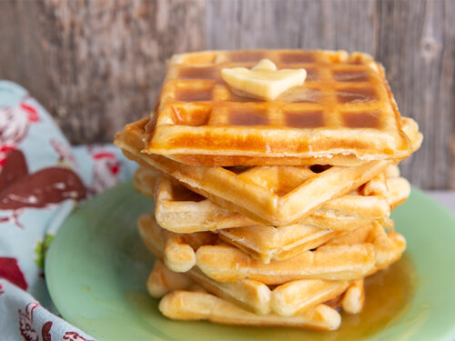

Waffles

Description:
Mouth-wateringly crisp waffles,
perfect to start your day.
Ingredients:
- 2 cups of flour
- 1 teaspoon of salt
- 4 teaspoons of baking powder
- 2 tablespoons of sugar
- 2 eggs
- 1½ cups of milk
- ⅓ cup of melted butter
- 1 teaspoon of vanilla extract
Steps
-
Mix the flour, salt, baking powder,
and sugar together in a large bowl
and set it aside. Preheat your waffle
iron to desired temperature.
-
In a separate bowl, beat the eggs.
Stir in the milk, butter and vanilla.
Pour the milk mixture into the flour
mixture; beat until blended.
-
Ladle the batter into a preheated waffle
iron. Cook the waffles until golden
and crisp. Serve immediately.